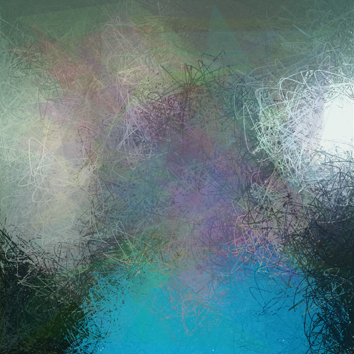
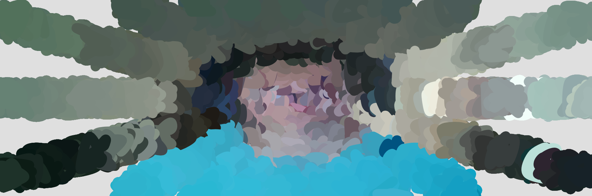
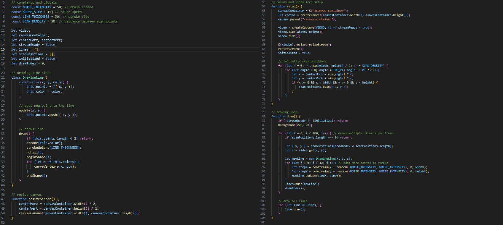
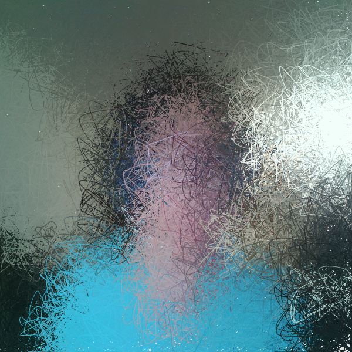
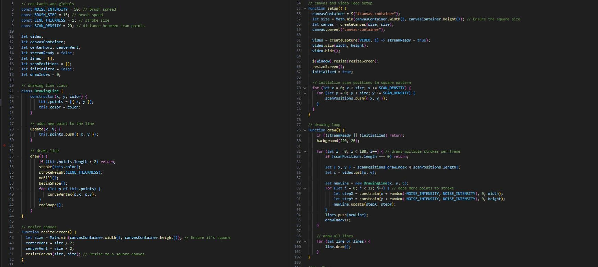
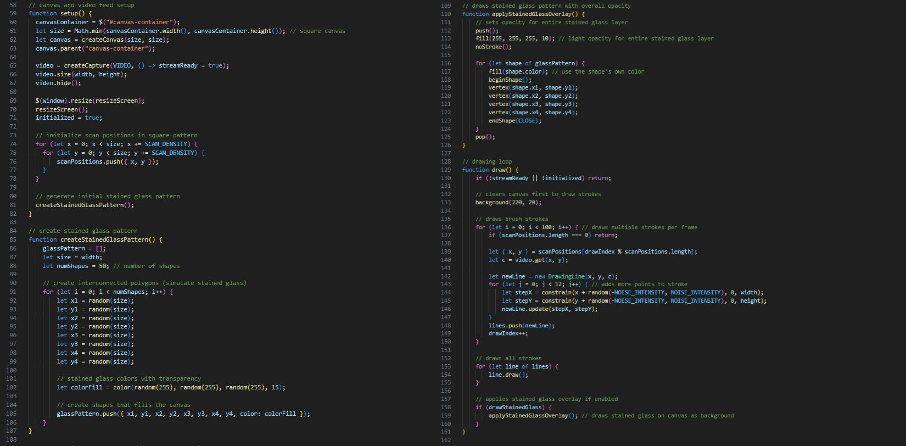
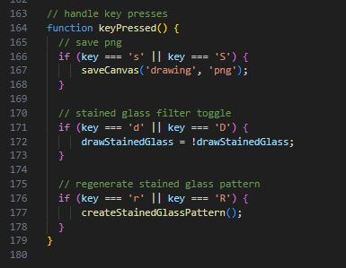

Experiment 4 - Images, Video, & Sound Art
Use 'S' key to save a png capture.
Use 'R' key to regenerate stained glass filter design.
Use 'D' key to toggle stained glass filter design visibility.
Description
This assignment is to create a generative design piece by starting from a reference generative design you pick out and creating your own take on it and adding more.
The main goals of this assignment is to imitate, integrate, and innovate. Imitate and integration is to take the reference design and create your own design based on the design and code.
Innovating is to go further and add more designs that work together.
This experiment focuses on interacting with images, videos, and audio. I chose to play with live video capture.
This is my final result

Technical
Imitate
For this project I took inspiration from the design and code of a generative design we were able to choose from for this assignment.
The example I chose from was to take live video and draw and update the drawing in real-time.
Design Link
Intergrate
To start this project I first implemented my own version of the example design by having my code draw brush strokes like the example but mine works in a circle rather than like the example where it just draws on a canvas.

As seen in the code below, the format is very similar and clearly based on the example but with my own approach to how it generates the drawing.
The code takes what the camera captures and draws what it sees and updates live so if a change is made and captured by the camera, the drawing updates to match that change.

To improve on this project even more, I then changed the canvas to be a square to be more full and complete and the brush strokes thinner which makes the drawing more sketch-like.
The code was changed to the pattern to no longer be a circle but rather drawn from left to right.
As seen the outcome is very pretty with the colors and the thin lines are much more like a sketch work than painting. The details are also much more noticeable in this version.


Innovate
Above was already some innovation but I wanted to go even further and add something to make the project more interesting and solid than just messy lines.
To do this I added my approach to stained glass which was drawing multiple shapes at random and reducing the opacity so the drawing behind the stained glass shapes gets affected by the color.
The code below also makes it so when the drawing is updated, the stained glass stays on the top/front layer and pressing the 'R' key will regenerate the stained glass pattern to a new random one and pressing the 'D' key will toggle the stained glass visibility.

Also this code shows the keys for saving a png screen capture of the experiment, the stained glass filter toggle, and regenerating the design of the stained glass.

Reflection
This experiment was really easy to do as it was similar to the previous experiments but the challenge was experimenting with live updates.
It was a struggle initially to get the drawing to update in real-time from the video capture but I was able to get it working with the circle drawing approach I did instead of the one from the example I based on.
Then I simply improved the brush look and added some other generative designs to work along the drawing to make it unique and pretty.